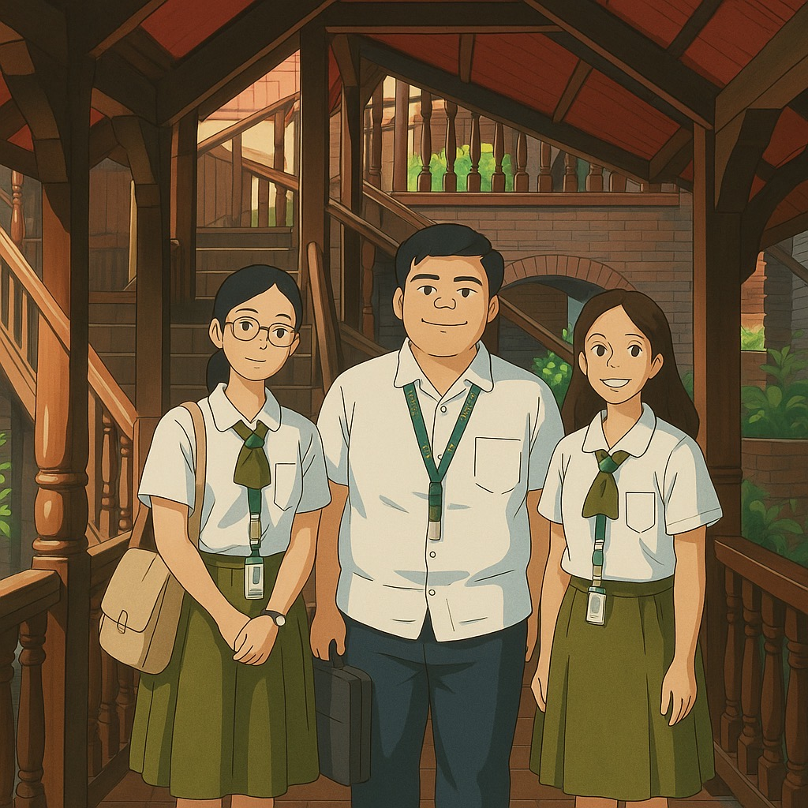

Meet the people behind DIGIstorya — driven by a passion for education.

Kasalukuyang kumukuha ng kursong Bachelor of Secondary Education, na may espesyalisasyon sa Social Studies, sa General de Jesus College para sa taong panuruan 2024–2025. Noong 2022, nagtapos siya sa Senior High School sa strand na Humanities and Social Sciences at ginawaran ng may mataas na parangal. Mula noon ay nanatili siyang consistent honor student at naging aktibong miyembro ng College Student Council mula 2022 hanggang 2024.
Kasalukuyang kumukuha ng kursong Bachelor of Secondary Education, na may espesyalisasyon sa Social Studies, sa General de Jesus College para sa taong panuruan 2024–2025. Noong 2013, nagtapos siya ng High School sa Holy Rosary Colleges Foundation. Siya ay naging miyembro ng Psychology Society at naging aktibo sa pagbigay ng suporta at serbisyo sa mga taong may mga disabilidad.
Kasalukuyang kumukuha ng kursong Bachelor of Secondary Education, na may espesyalisasyon sa Social Studies, sa General de Jesus College para sa taong panuruan 2024–2025. Noong 2013, nagtapos siya ng High School sa Holy Rosary Colleges Foundation. Siya ay naging miyembro ng Psychology Society at naging aktibo sa pagbigay ng suporta at serbisyo sa mga taong may mga disabilidad.
DIGIstorya aims to deliver meaningful knowledge in history through a digital approach—making it easier, more engaging, and more exciting for the new generation of learners.